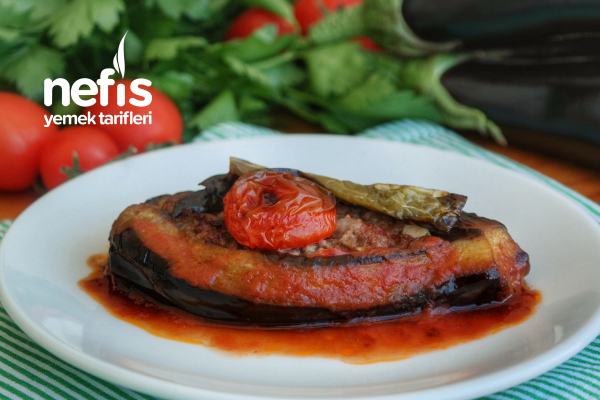

Nefis Bir karnıyarık
Tarifin Hikayesi
Sebzelerin en çok sevileni patlıcanın en güzel hali karnıyarık. Pilavla ayrılmaz olan karnıyarığın imambayıldı ile arasındaki o ince çizgi içerisindeki kıymalardır. Ana yemeklerin vazgeçilmezi olan karnıyarık herkesin sevdalısı olduğu bir yemek.

Karnıyarık Tarifi İçin Malzemeler
- 6 adet küçük boy patlıcan (büyük ise ikiye bölebilirsiniz)
- 3 adet sivri biber
Kıymalı Harç İçin;
- 2 adet orta boy soğan
- 2 adet domates
- 2 adet sivri biber
- 2 diş sarımsak
- Sıvı yağ, tuz, karabiber, kırmızıbiber
- 200 gr kıyma
- 1 çay bardağı sıcak su
Sosu İçin;
- 1 yemek kaşığı salça
- 1 su bardağı sıcak su